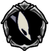

Mantis Youth
 Member of a proud tribe, fiercely protective of its territory. Launches stinging attacks with its needle sharp abdomen.As it grows, it loses the ability to fly. Passage into adulthood is often celebrated, but as time goes by we realise what we have lost.
Member of a proud tribe, fiercely protective of its territory. Launches stinging attacks with its needle sharp abdomen.As it grows, it loses the ability to fly. Passage into adulthood is often celebrated, but as time goes by we realise what we have lost.

x 5
x 6
 x 25
x 25The Mantis Youth is a flying creature found in the Fungal Wastes near the Mantis Village. It is the younger stage of a Mantis Warrior. Unlike most other creatures, Mantis Youths will reappear if the player exits and reenters the room.

 When the player approaches, it drops down from its perch and begins to fly around at a medium range.The Mantis Youth curls in slightly, then springs towards the player, with its sharp abdomen extended. It then recoils back towards where it began its attack.Once the Mantis Lords are defeated, they will not attack unless hit first.
It can be difficult to hit a Mantis Youth during their attack, as they move quickly. It is better to go after them between attacks than to try to hit them during one.Dashing to avoid their attacks is quite reliable, as long as you don't dash directly towards them. If you can, try to position yourself under them when their attack finishes, so you can attack above your head when they return to their starting position.If you can manage to position yourself above them, Mantis Youths cannot attack upwawrds.
When the player approaches, it drops down from its perch and begins to fly around at a medium range.The Mantis Youth curls in slightly, then springs towards the player, with its sharp abdomen extended. It then recoils back towards where it began its attack.Once the Mantis Lords are defeated, they will not attack unless hit first.
It can be difficult to hit a Mantis Youth during their attack, as they move quickly. It is better to go after them between attacks than to try to hit them during one.Dashing to avoid their attacks is quite reliable, as long as you don't dash directly towards them. If you can, try to position yourself under them when their attack finishes, so you can attack above your head when they return to their starting position.If you can manage to position yourself above them, Mantis Youths cannot attack upwawrds.
Mantis Youths can be found the following areas: